Drop #23 · January 6, 2025 · 8 min read
Hey everyone (▰˘◡˘▰)
Happy 2025! This Drop is dedicated to the albums that moved, surprised, and shaped my 2024. It is my first shot at this new year's resolution to write more about music. Needless to say, this list is deeply personal, making no claims to completeness or objectivity. The albums are in no particular order either. Hopefully, you'll find something that speaks to you, like I always do when I stumble through others' year-end lists.
As always, REINCANTAMENTO is sustained by voluntary work. If you like what we do, consider donating or subscribing to support what we do!
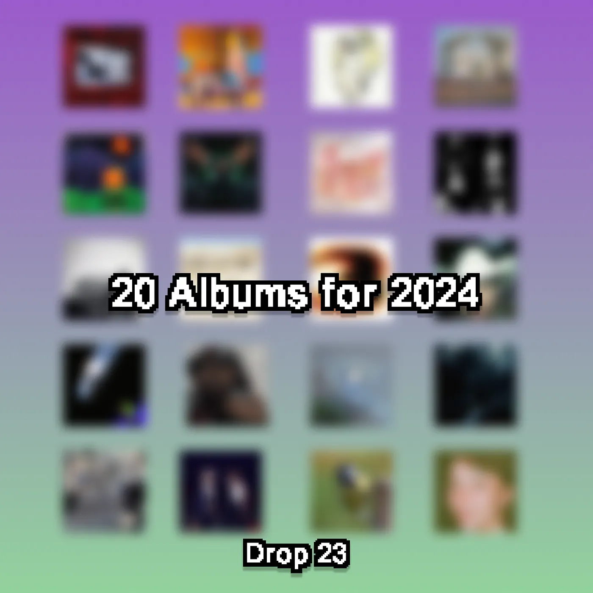
"Music is prophecy. Its styles and economic organization are ahead of the rest of society because it explores, much faster than material reality can, the entire range of possibilities in a given code."
Jacques Attali, Noise
#1. LAO - Chapultepec
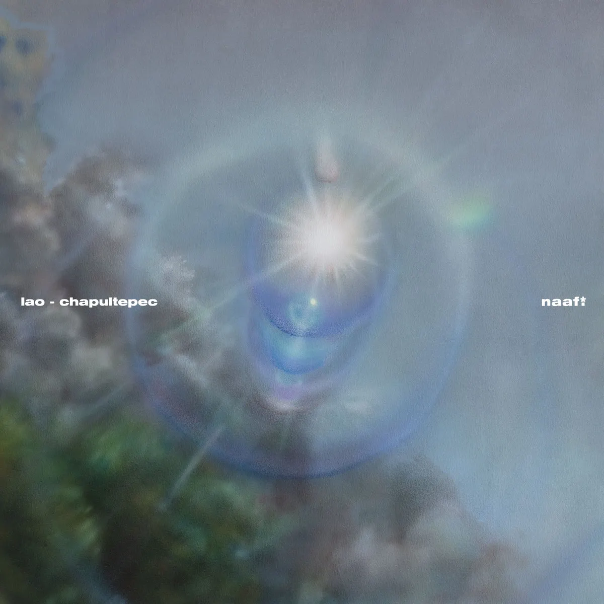
A lectio magistralis on the Mexican dancefloor. This year I got deeply into electronic production from the South American continent - they shine as the most rhythmically interesting tunes one can find in a club. This record takes that energy and transforms it into a cohesive, sonically adventurous monument.
#2. Vampire Weekend - Only God Was Above Us
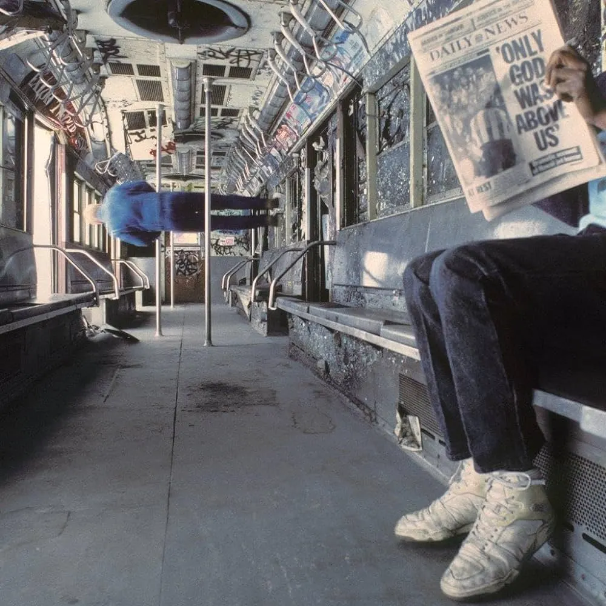
If I knew who Vampire Weekend were - Ivy League, white, pretentious New Yorkers - before their music, I probably wouldn't like it as much. Yet, I discovered them ten years ago with Modern Vampires of the City and never looked back. This record manages to be existential and light-hearted simultaneously. It oozes New York City, from the cover to the NY hip-hop-style breakbeat in “Mary Boone”. The closing track “Hope” hits hard as an anthem to radical acceptance and the beauty of giving up, sometimes.
#3. Nídia & Valentina - Estradas
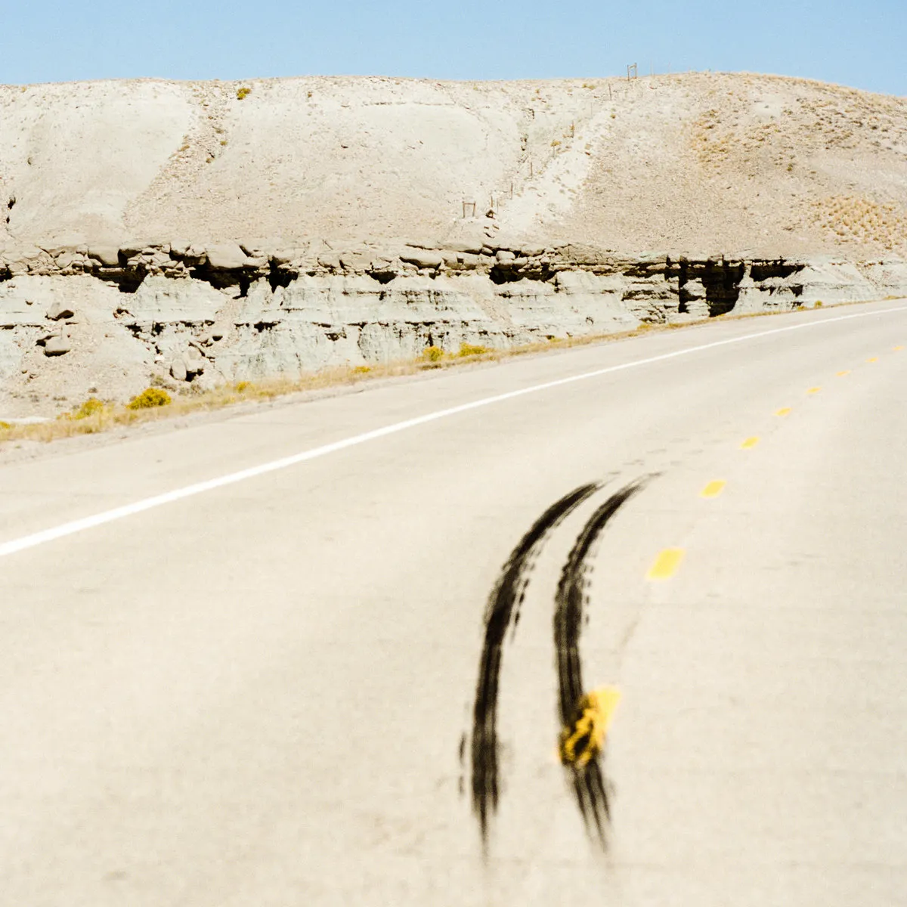
Valentina Magaletti, Italian avant-gardist multi-instrumentalist and exceptional drummer, teams up with forward-looking Portuguese DJ and producer Nídia for a sexy, polyrhythmic journey. It feels like an orgiastic rave under a hazy Mediterranean sun. Their energetic live set at Unsound was a highlight of the festival.
#4. Kendrick Lamar - GNX
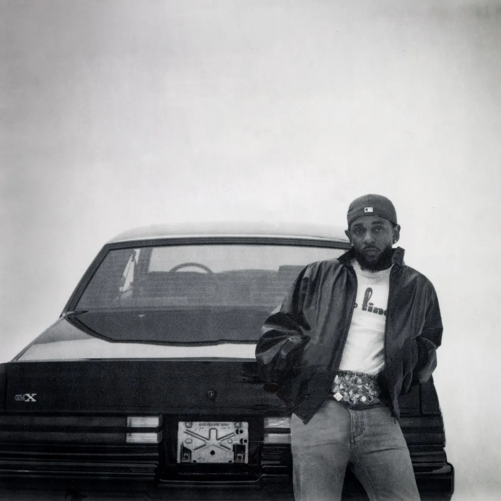
A triumphant victory lap from hip-hop's reigning champion. From "Like That" to the trilogy of legendary diss tracks (plus the criminally underrated “Watch The Party Die”), Kendrick proves why he's the best alive. While lighter than his previous work, this record's minimalist West Coast sound and mixtape approach delivered exactly what 2024 needed.
#5. Adrienne Lenker - Bright Future
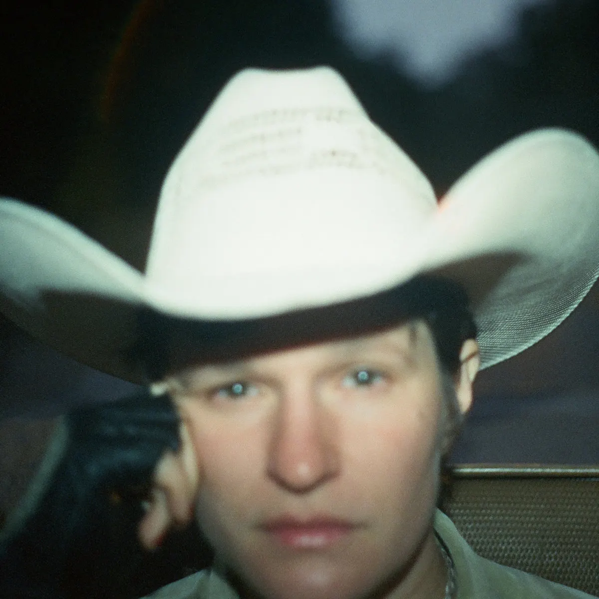
I have a crystalline memory of first playing this record: waiting for the Ubahn in Potsdamer Platz during my lowest period of the year. Adrienne's voice and ethereal folk guitar became a balsam for my soul. Out-of-time and yet contemporary, terrestrial, and celestial.
#6. Future & Metro Boomin - We Don’t Trust You + We Still Don’t Trust You
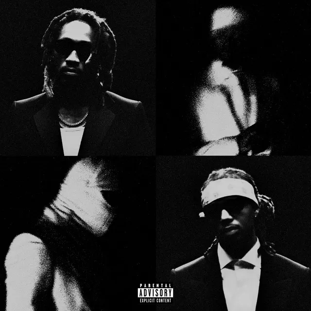
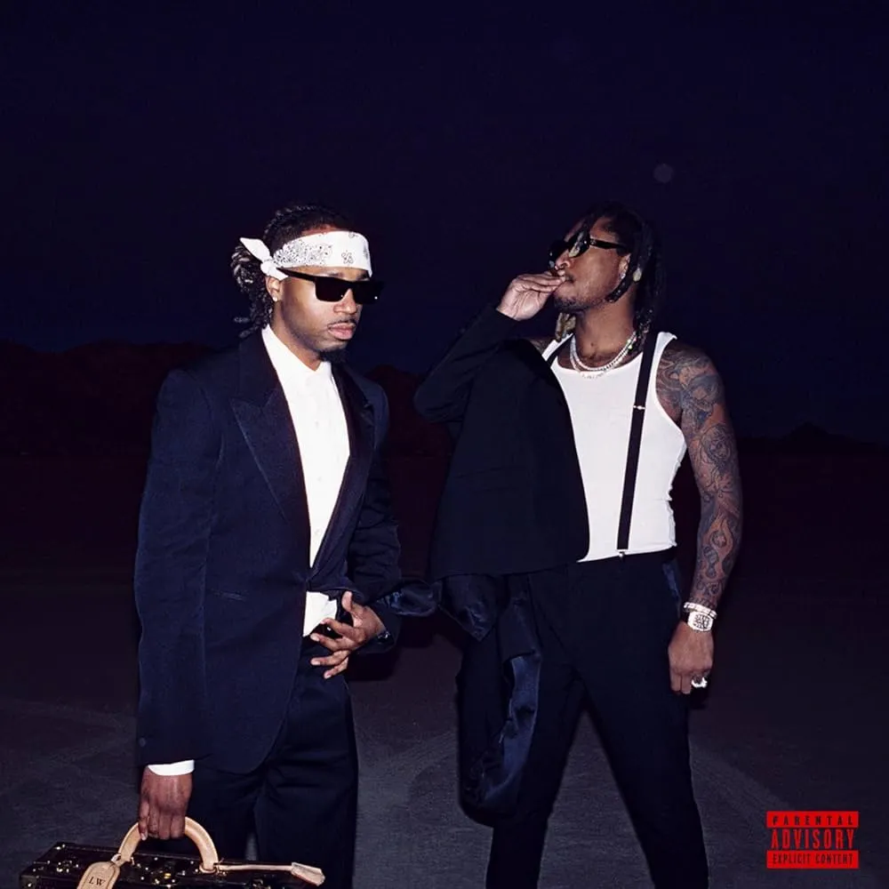
If Kendrick shot the Archduke and started the war, this diabolic duo architected the whole operation. In two weeks, these albums not only attacked Drake's career unprecedentedly but reminded everyone that Future & Metro Boomin is one of the best combinations in contemporary hip-hop. In almost two hours of music, Future flows over Metro's wide palette of catchy, dark beats, moving from trap-lord moments like “Magic Don Juan” to melancholic tunes like “This Sunday”. Iconic.
#7. Hakushi Hasegawa - Mahōgakkō
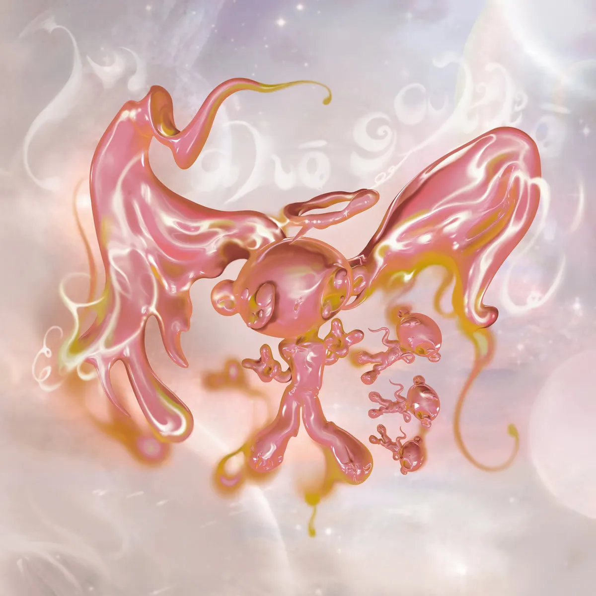
Jazz at its utter limit, on the grasp of breaking up, merging with the cosmos, and morphing into something new. “The Blossom and the Thunder” encapsulates it all: after two minutes of elegant Japanese jazz, it's hacked by thunderous drums, disappears, and regurgitates as a soft tone somewhere in the future. The opening track Departed's trance laser-show interplay with Hasegawa's enchanted singing is equally mesmerizing.
#8. Misto Mame - Primavera Overground
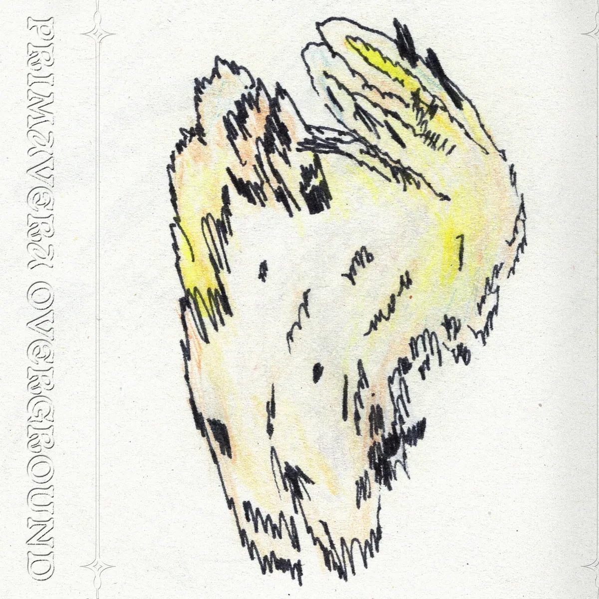
A precious compilation from one of Italy's most intriguing (non) labels. A twisted trip through New Weird Italia landscapes. I love the rarefied romanticism of “Get Everything Before He Does” by Dori Sorride, the invocations of “Io Suonavo Ma In Realtà Era Un Ramo Che Fischiava” by La Festa Delle Rane and the alien songwriting by Trapcoustic. A soundtrack for many springs to come.
#9. Klein - Marked
Klein exists in some N-dimensional space of her own creation. marked leans more into noise rock than her previous work, using guitar as its north star. It's distinctively anxious and grimy while feeling loose and spacious - claustrophobic as every gentrifying and increasingly fascist Western metropolis in 2024. Perhaps this is why I keep returning to it.
#10. Mk.gee - Two Star & The Dream Police
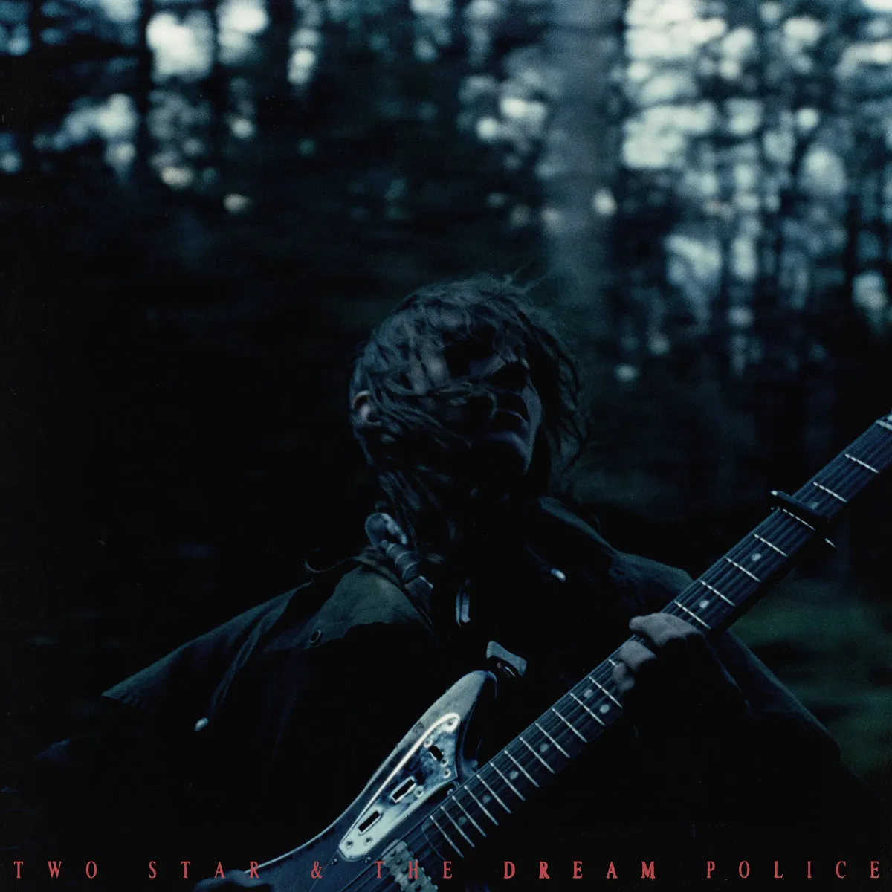
One more guitar-centric record. An extraordinarily well-crafted record striking a golden ratio between accessibility and experimentation. Much has been written about this one, so I'll simply say it's 33 minutes of sunset landing on a mushroom trip. "Are You Looking Up" is already a classic.
#11. Rafael Toral - Spectral Evolution
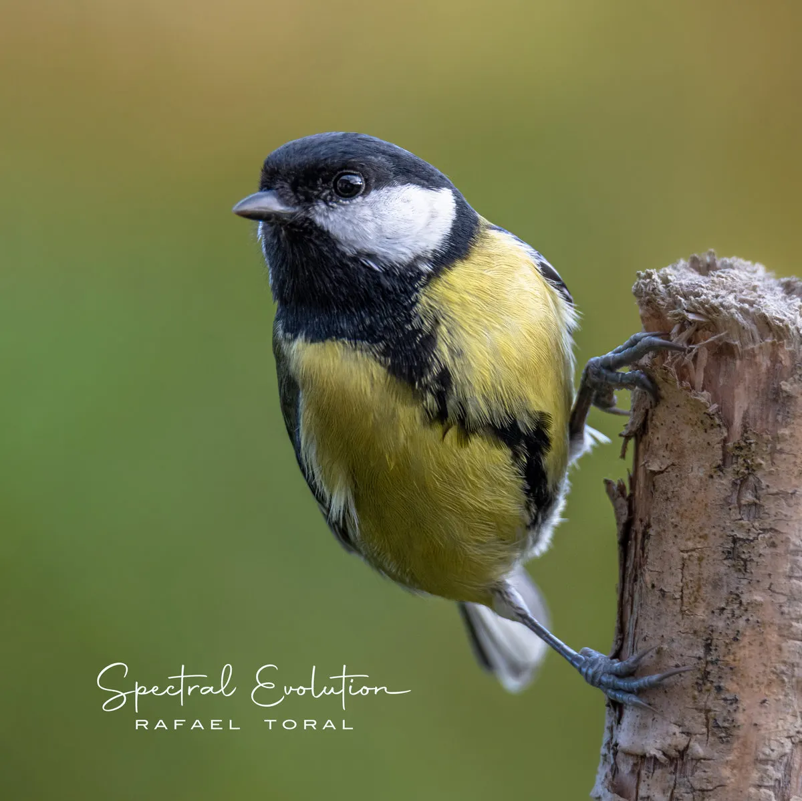
Guitar prominence takes a different form in this 47-minute ambient suite by Portuguese musician Rafael Toral. Spectral Evolution captures a slow morning in early spring: nature awakening after winter, finding its new harmony. Exorbitant beauty.
#12. Yung Lean & Bladee - Psykos
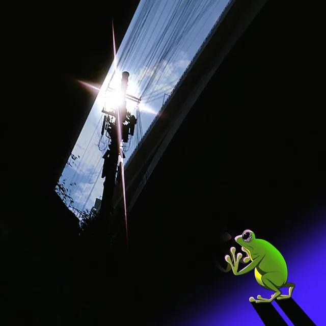
I've been a fan of these two Swedish artists since forever and cherish every success of theirs, especially surprised by Bladee's incredible run. Psykos finds the two friends playing the hyper-memetic version of Ian Curtis. Starting with a back-to-back poem on "Coda" with the memorable line: "I hear God talking / But it's overshadowed by El Diablo". Psykos continues with crepuscular ballads like "Still" and infectious esoteric bangers like "Golden Sun”. Sad Boys do it well.
#13. Cindy Lee - Diamond Jubilee
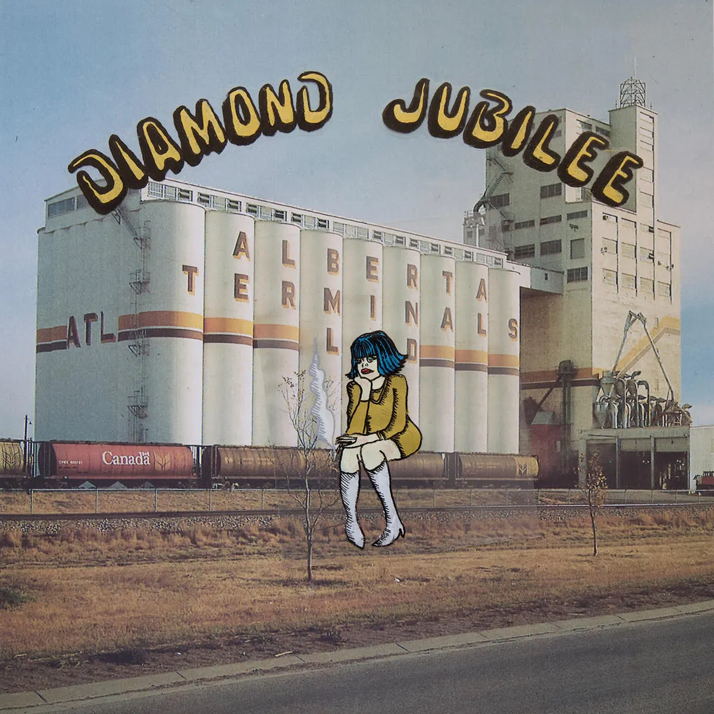
This album almost single-handedly resurrected the dormant utopia of lo-fi indie rock. Diamond Jubilee came out as a massive fuck-off to the dictatorship of streaming services and doesn't exist on any service for Cindy Lee's explicit political motivation:
"THE CEO OF SPOTIFY IS A THIEF AND A WAR PIG. HE STOLE 100 MILLION EUROS FROM ROCK AND ROLLERS AND USED THE MONEY TO INVEST IN 'HELSING.' 'HELSING' IS A MILITARY ARTIFICIAL INTELLIGENCE INNOVATOR."
Beyond this, it is hypnagogic, lo-fi, oneiric, and desperately romantic as all the best albums of this genre are. It will live for years.
#14. Still House Plants - if i don’t make it, i love u
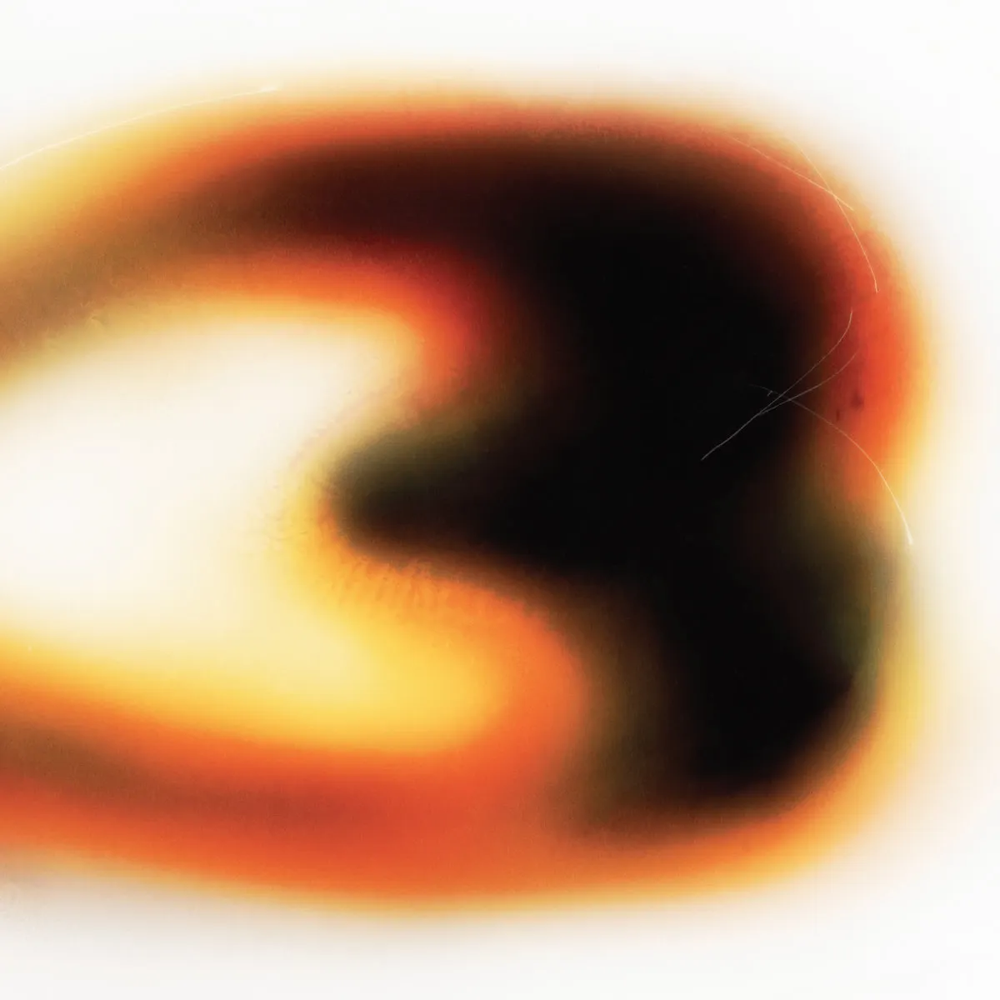
Edgy, diagonal post-punk from the UK. The drummer on here is incredible and the vocal performance is iconic. I just love the way they sing the line in the opening track "M M M": "I wish I was called Makitaaa". All the elements exist in a dissonant harmony, with no typical rock band hierarchy or predetermined song structure present. Deconstructive act of the year.
#15. Lechuga Zafiro - Desde los oídos de un sapo
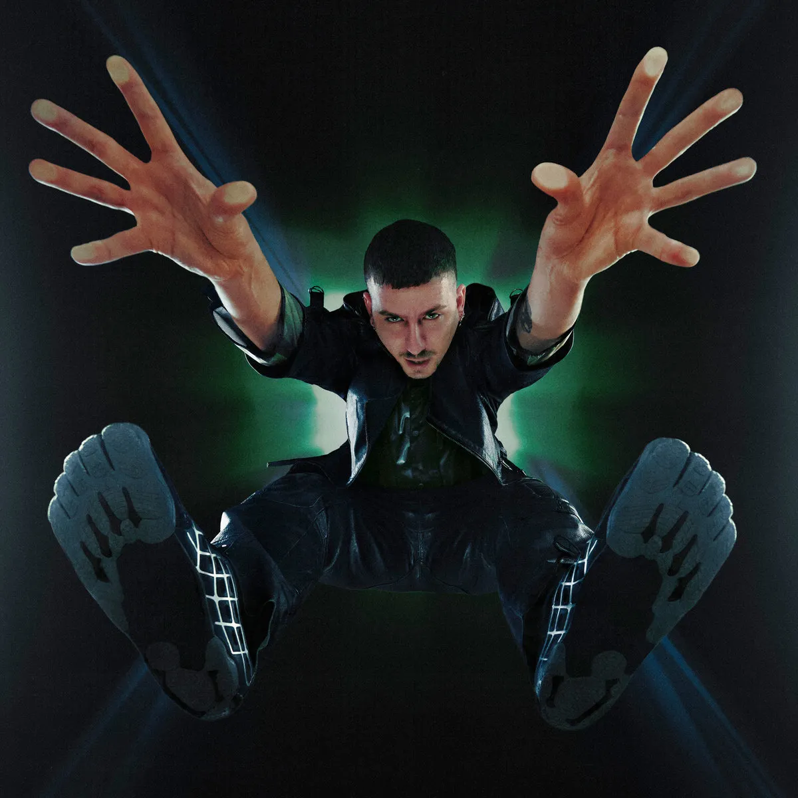
Lechuga Zafiro is one of the best DJs I've ever seen perform, and his exceptional talent completely rewired my brain at the Metarave party in Berlin in August. His debut album is less banger-oriented than I expected, but over time I came to grasp the incredible value of the record. A liquid seminar on percussions in every form and shape - an amphibian exploration moving between field recording and sci-fi sound design. This record is an alien spaceship coming from Uruguay.
#16. Naemi - Dust Devil
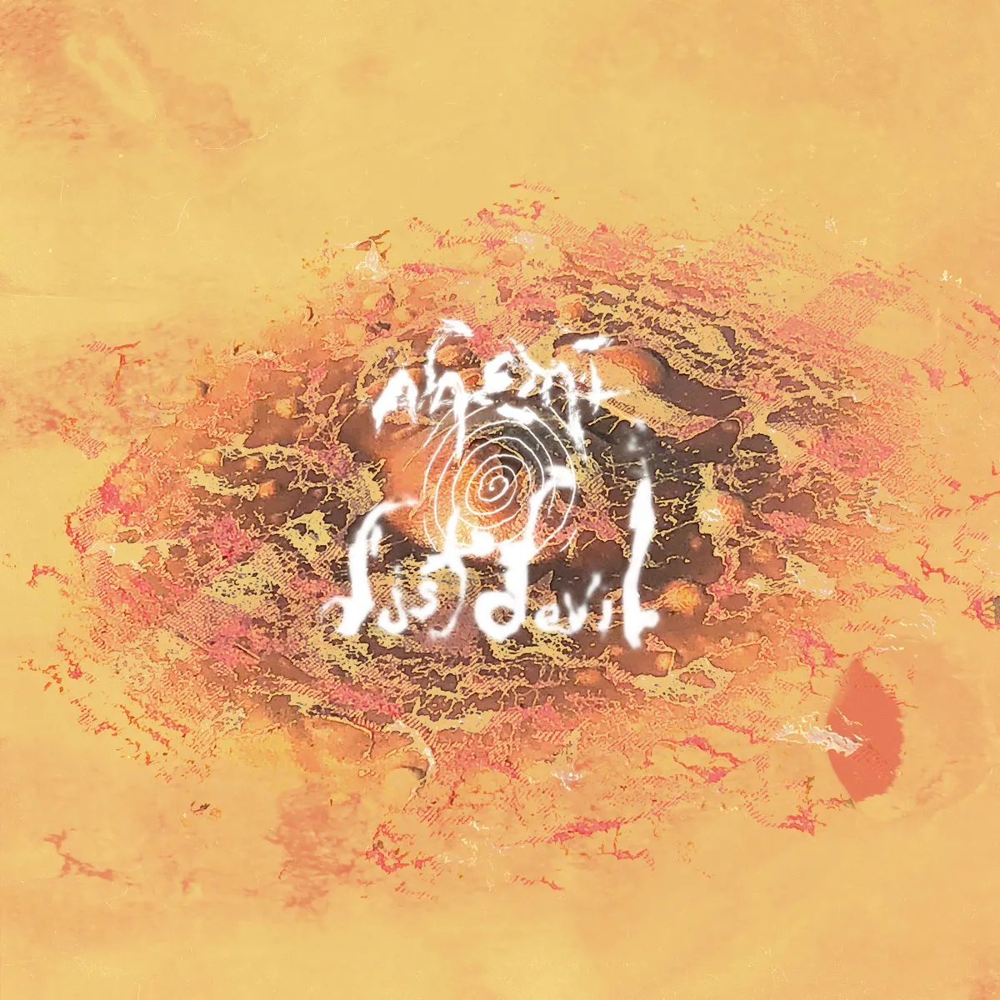
One for the ambient concrète, Kwia-adjacent Berlin scene. As listening bars often create, this album is an aquarium full of love and dreams. It's the soundtrack to collective healing, lucid dreams, and the mint-like aftertaste of ketamine. Softcore.
#17. Tyler, The Creator - Chromakopia
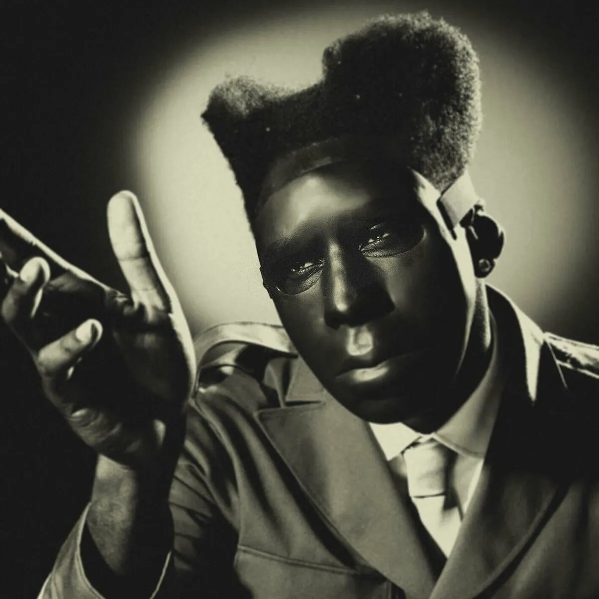
Tyler enters his thirties and stages an absurd theatre of all the paranoias, dramas, doubts, and joys that crossing this threshold brings. My greatest compliment is that, despite the presence of a new alter ego, this is Tyler's most relatable record for me in a good while. The mask doesn't create distance with the listeners but allows Tyler to open up like never before about relationships, abortion, his dad and so much more. "Judge Judy" is my favorite song on here because it feels so timely in a world of situationships and polyamory.
#18. Astrid Sonne - Great Doubt
Another otherworldly gem from a Danish talent. Exquisitely post-genre, classical arches meet ethereal vocals meet hip-hop drums. The final picture is an evolving soundscape, cozy yet constantly surprising. Lots of relatable lyrics as well. One Bandcamp comment captures my feelings about my favorite track: "Do you wanna" feels like it could be the anthem of a generation.
#19. The Smile - Wall of Eyes + Cutouts
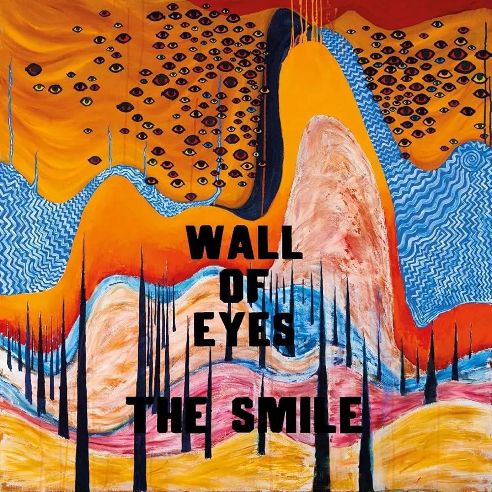
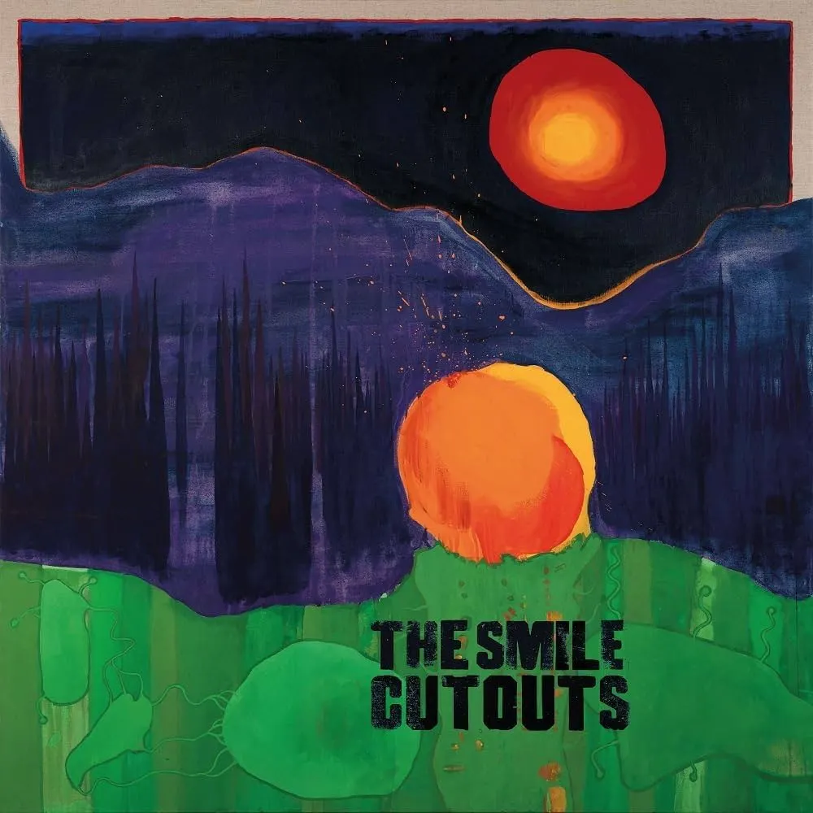
The Smile - holding the title for the most generic band name ever - are Radiohead's offshoot. As a Radiohead fan and, syllogistically, even despite Thom Yorke's ridiculous hostility to boycotting Israel, I found myself becoming a Smile fan. They released two records this year, and while Wall of Eyes is superior, Cutouts contains "Instant Psalms" which I played on repeat throughout the fall. The Smile breaks free of Radiohead's boundaries, finding Greenwood and Yorke more kosmic, improvisational, and jazz-influenced than ever. Sounds like Dalí's melting clocks.
#20. Mabe Fratti - Sentir Que No Sabes
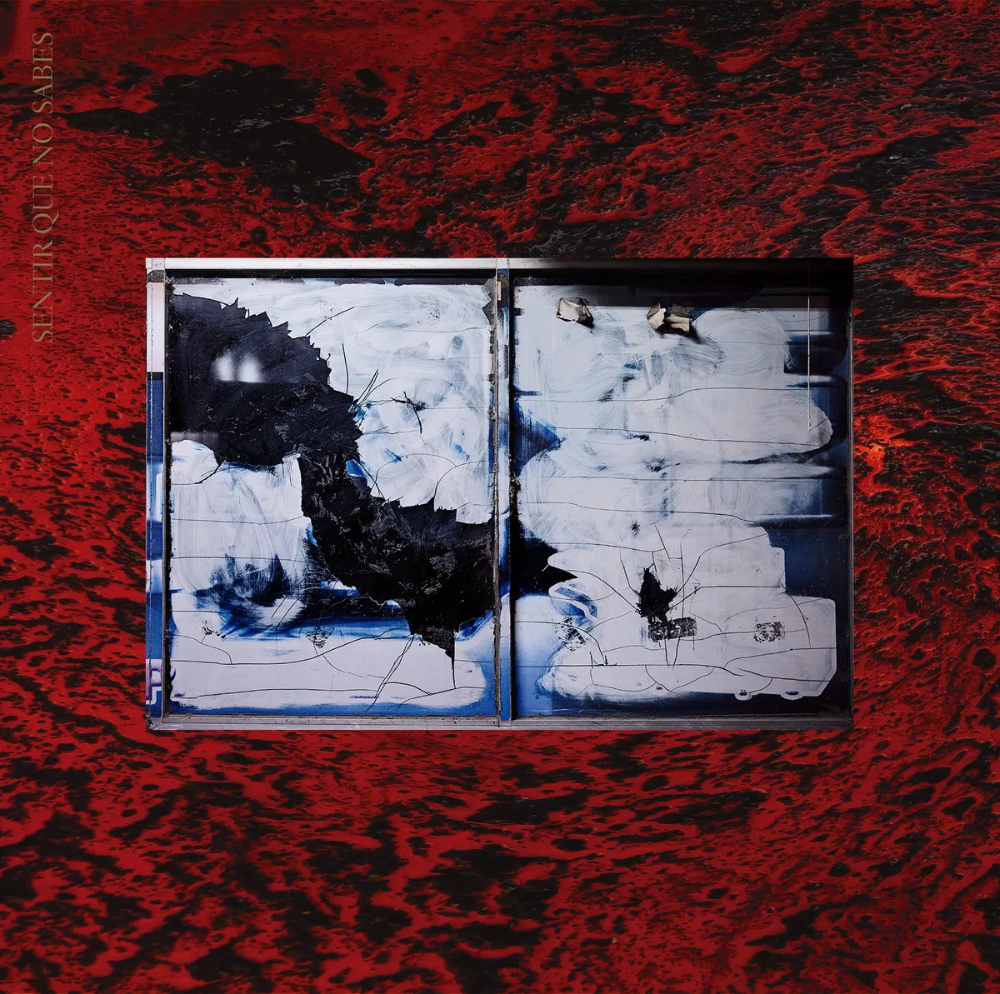
Mabe Fratti moves around, with cautious grace. This album is spacious, with the Mexican singer's voice weaving in and out through minimalistic textures, jazz elements, and art rock motifs. Fratti defies expectations and evokes the new, unnameable feelings suggested by the title.
Special mentions:
Papa V - La Trap Fatta Bene
Simba La Rue - Tunnel
Jlin - Akoma
Cameron Winter - Heavy Metal